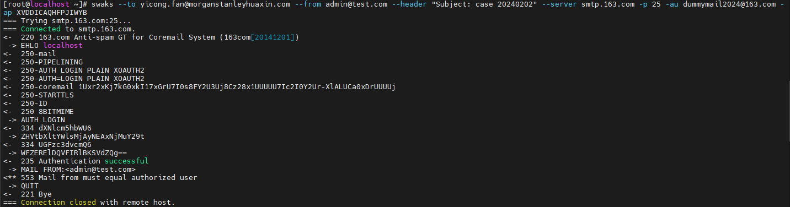

2024.01 遇到问题
遇到一封钓鱼邮件，邮件头的From字段被篡改为公司邮件域名结尾的邮箱地址，并且不存在第三方代发。outlook设置的判断邮件是否来自外部，将其判断为内部邮件。发件人真实的发件域名注册了spf记录，因此spf check结果显示为pass，但无dkim，dmarc结果为failed。针对这一现象，引发了一些思考。
尝试复现钓鱼邮件
Swaks是一个SMTP测试工具，可以用来模拟发送钓鱼邮件。swaks不能在Windows上运行，我在官方网站下载了tar包，直接解压在一台RHEL 8.5上即可运行。需要注意swaks用perl编写，对perl包有依赖。首先准备将本地RHEL作为邮件服务器，发送钓鱼邮件。安装了sendmail服务并systemctl start sendmail，随后swaks --to <recipient_email_addr> --from <fake_email_addr> --header "Subject: case 20240202"，收件地址分别发送到本地网关和O365网关。发送到本地网关的钓鱼邮件成功进站，因为我没有dns和电子签名等准备，spf和dkim failed。收件人这一侧outlook规则判断钓鱼邮件为内部，显示发件人为fake_email_addr，无代发显示。但是发送到O365网关的邮件显示blocked using Spamhaus，从结果来看，O365网关安全性更高。有没有办法发送到O365网关进站呢。
第二步复现测试，目标是把钓鱼邮件发进O365网关。想要发进O365网关，首先要解决blocked using Spamhaus，想到relay公网邮件服务器来做邮件发送，swaks有参数--server，可以指定邮件服务器。登录163邮箱后，打开SMTP服务。relay 163邮件服务，来发送到O365网关swaks --to <recipient_email_addr> --from <fake_email_addr> --header "Subject: testcase 20240202" --server smtp.163.com -p 25 -au <163_email_addr> -ap <token>收到报错如下图。

Mail from和authorized user必须保持一致，这应该是163邮件服务出站前的检测，有没有办法绕过此检查呢。swaks --help发现参数--header，其说明为These options allow a way to change headers that already exist in the DATA.，即通过该参数可以改写邮件DATA内的数据。通过--from <authorized_email_addr> --header "From: <fake_email_addr>"来改写from中的真实地址。swaks --to <recipient_email_addr> --from <163_email_addr> --header "Subject: testcase 20240202\nFrom: fake_sender <fake_email_addr>" --server smtp.163.com -p 25 -au <163_email_addr> -ap <token> 这么修改确实发进来了，用户端outlook显示swaks --to <recipient_email_addr> --from <163_email_addr> --header "Subject: testcase 20240202\nFrom: fake_sender <fake_email_addr>\nSender: <fake_email_addr>" --server smtp.163.com -p 25 -au <163_email_addr> -ap <token>尝试，但是失败了，估计是邮件出站前，会被smtp服务器改为真实地址。
如何防范
Anti-spam message headers in Microsoft 365
其实O365在这方面比我们自己的本地网关做的好多了，通过邮件头检查和与其他同事讨论，微软会给进站邮件打一些标签在邮件头内，这些标签显示了EOP对该邮件的分析结果。EOP应该有策略，可以直接针对分析结果，对钓鱼邮件进一步处理，但是我们没有EOP权限，怎么在本地网关做一些事情呢？我的想法是扫描进站邮件的header，对X-Forefront-Antispam-Report这个header的值做判断，其中SCL:5，SCL:6，SCL:7，SCL:8，SCL:9，SFV:SPM，CAT:OSPM对这些field做或的判断，如果命中，则隔离邮件。尚未实施，后续更新结果。